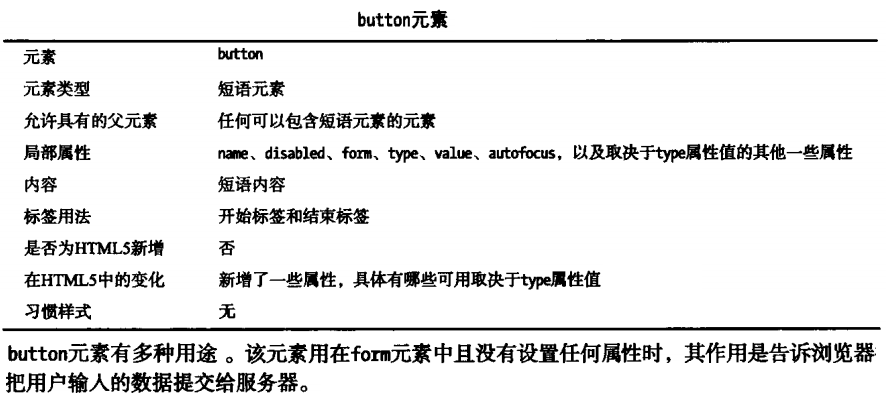
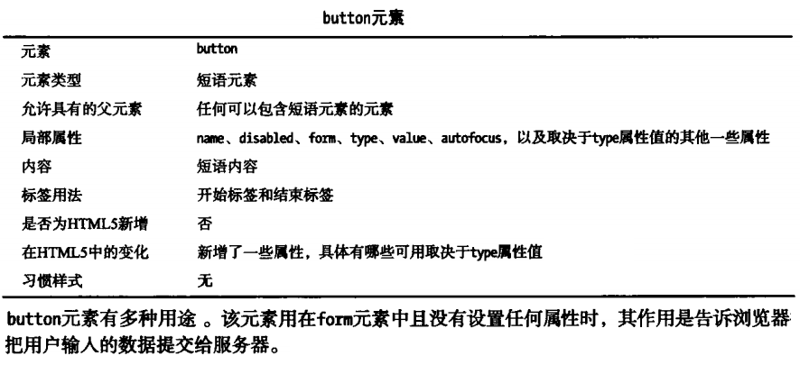

表单的使用
1、基本表单元素
1.1、form元素定义表单
1.2、input元素用于收集用户输入数据，有多种类型
1.3、label元素为表单其他元素添加说明标签
 其for属性用于与其他表单元素关联，for属性的值与所关联的表单元素id值相同，所关联表单元素不必嵌入label标签中，点击label标签将会自动聚焦到所关联表单元素。
1.4、button元素表示按钮，用于提交数据或其他点击事件，button元素也可以使用type为button的input元素代替，IE6不能正确处理button元素。

1.5、select元素生成选项列表，每个选项由option元素定义
示例：运动：
这种列表只能选择其中的选项而不能自定义输入。option的selected属性设置为默认选中，如果没有设置，则默认选中第一个option值。
在实际使用中，往往会设置第一个option选项为空且设置display为none来达到默认值为空的效果。运动：
设置size属性可让select元素显示多个选项，设置mutiple属性则可让用户一次选择多个属性，选择多个因素时需要按住ctrl键。运动：
通过上面的示例发现显示多个元素时，选项与select所在行底端对齐，通过设置label内嵌样式达到顶端对齐的效果：
使用optgroup元素可以在select元素中分组以建立一定的结构。其label属性为整组选项提供一个小标题，disabled属性禁止使用组内任一选项。运动：
1.6、textarea元素用于输入多行文字
rows和cols属性设置行数和列数，wrap属性有两个值：hard和soft，分别代表硬换行和软换行，硬换行时会插入换行符，结果是所提交文字每一行字符数不超过cols属性的规定。
1.7、output元素表示计算结果
上例中，利用javascript事件系统生成了一个简单的计数器，两个number型input元素的值的乘积会显示为output元素的值。
1.8、keygen元素生成公开/私有密钥对
其for属性用于与其他表单元素关联，for属性的值与所关联的表单元素id值相同，所关联表单元素不必嵌入label标签中，点击label标签将会自动聚焦到所关联表单元素。
1.4、button元素表示按钮，用于提交数据或其他点击事件，button元素也可以使用type为button的input元素代替，IE6不能正确处理button元素。

1.5、select元素生成选项列表，每个选项由option元素定义
示例：运动：
这种列表只能选择其中的选项而不能自定义输入。option的selected属性设置为默认选中，如果没有设置，则默认选中第一个option值。
在实际使用中，往往会设置第一个option选项为空且设置display为none来达到默认值为空的效果。运动：
设置size属性可让select元素显示多个选项，设置mutiple属性则可让用户一次选择多个属性，选择多个因素时需要按住ctrl键。运动：
通过上面的示例发现显示多个元素时，选项与select所在行底端对齐，通过设置label内嵌样式达到顶端对齐的效果：
使用optgroup元素可以在select元素中分组以建立一定的结构。其label属性为整组选项提供一个小标题，disabled属性禁止使用组内任一选项。运动：
1.6、textarea元素用于输入多行文字
rows和cols属性设置行数和列数，wrap属性有两个值：hard和soft，分别代表硬换行和软换行，硬换行时会插入换行符，结果是所提交文字每一行字符数不超过cols属性的规定。
1.7、output元素表示计算结果
上例中，利用javascript事件系统生成了一个简单的计数器，两个number型input元素的值的乘积会显示为output元素的值。
1.8、keygen元素生成公开/私有密钥对
2、配置表单属性
2.1、action属性表明表单数据提交到什么地方，其值一般为一个URL，默认值为当前表单所在页面。target属性规定提交目标的显示位置（新标签页还是原页面等）。
2.2、method属性指定表单数据的提交到服务器的HTTP方法（get或post），默认值为get，提交表单推荐使用post方法。
2.3、enctype属性指定数据发送过程采用的编码方式
默认值为application/x-www-form-urlencode,它不支持文件上传，适用于各类型表单，编码方式类似于URL编码，特殊字符替换成对应的HTML实体，数据项名称和值以等号（=）连接。
文件上传应该使用multipart/form-data,text/plain编码方式因浏览器而异，不推荐使用。
2.4、form元素和input元素都有autocomplete属性，用控制整个表单或单个input元素的自动完成功能，有on和off两个值，默认值为on。
2.6、name属性设置表单名称，用于在DOM模型中区分各个表单，其值一般和表单的id值相同。
3、配置表单元素
3.1、autofocus属性用于表单首次显示出来时自动聚焦到某个表单元素，默认聚焦于第一个输入元素。
tip:如果多个input元素都设置了这个属性，那么浏览器会聚焦于其中的最后一个元素。
3.2、disabled属性用于禁用元素，多种表单元素都设置了该属性
3.3、fieldset元素用于对表单元素编组
fieldset元素中添加一个legend元素可以为其添加说明标签，legend元素必须是fieldset元素的第一个子标签。
示例：
此外，设置fieldset元素的disabled属性即可禁掉整组input元素。
4、使用button元素
默认type属性值为submit，用于提交表单
5、定制input元素
5.1、单行文本框设置
设置type属性值为text，这也是type属性的默认值
5.1.1、maxlength vs size?最大输入字符数和最大显示字符数
5.1.2、value vs placeholder?初始值和占位提示符
5.1.3、使用数据列表
将input元素的list属性值设置为一个datalist元素的id属性值，在文本输入时即可选择datalist中的选项，
datalist元素是HTML5中新增的，用以提供一批值，datalist中的每个选项由option元素定义。
注意option元素的label属性值、value属性值以及它的内容往往是设置为一致的，其中label属性值和内容都是用于说明，真正提交的值为value值。
input、datalist二者结合使用的结果类似于select，但是却可以自定义输入值。
示例：
本例中，既可自主输入手机品牌，亦可从列表中选择。可与select元素对比：
5.1.4、readonly vs disabled？只读往往是有默认值却不能编辑，结果会提交，外观与正常元素无异，建议用隐藏类型（hidden、参见下文）元素代替；禁用的元素颜色变灰，结果不会被提交。
5.2、密码输入框设置
设置type属性值为password，输入的密码会显示为掩饰字符。password型input元素可用的额外属性用法与text型的input元素用法相同。
5.3、input型按钮
将type属性值设置为submit、reset、button会生成类似button元素那样的按钮。按钮的说明文字来自于它们value属性值。
5.4、单选和多选型input元素
radio用于在多个选项中进行单一选择，每一组选项由多个input元素组成，互斥的同一组input元素的name值必须设置为相同值。
性别：男女保密
checkbox用于在多个选项中进行多个选择，实际上这些选项不一定有明显联系，浏览器只会提交已选的选项，这种类型也常用于是否选择按钮。
爱好：篮球足球乒乓球
5.5、隐藏型input元素
设置type属性值为hidden即可将input元素隐藏，隐藏的数据在提交表单时会一并提交，用于没必要或不想让用户看到的数据项。
5.6、上传文件
file型元素可用于上传文件，注意表单编码类型（enctype）为multipart/form-data时才可上传文件。
示例：
5.7、生成图像提交按钮
示例：
5.8、其他类型
示例：
颜色：
日期：
带时区信息的日期和时间：
不带时区信息的日期和时间：
email：
month：
number：
range：
search：
tel：
time：
week：
url：
email型input元素还支持multiple属性用以接收多个电子邮箱地址。主流浏览器都能支持email型input元素，而url型时灵时不灵，tel型没有主流浏览器会真的去检查号码格式。
对于时间类型的input元素，浏览器支持还很差。
6、使用form属性将表单外的元素与表单关联
在HTML5之前的版本中，表单相关的元素必须放在form元素中，而在HTML5版本中，可以设置表单元素的form属性值与关联的form元素id值一致，从而使两者挂钩。
7、表单输入验证功能
表单验证功能包括：确保提供了一个值、确保值位于某一范围、确保输入与指定模式匹配。
关于输入验证功能的禁用：设置form元素的novalidate属性或提交按钮元素（submit型button或input元素）的formnovalidate属性